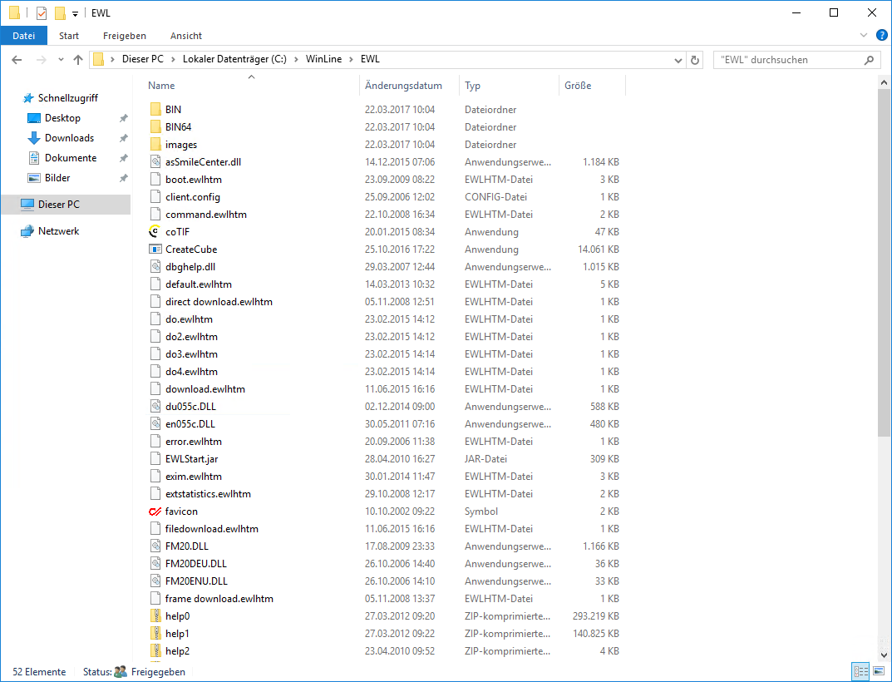

Im Zuge der Installation von WinLine wird als neues
Unterverzeichnis des WinLine-Serververzeichnisses der Ordner "EWL" angelegt,
welcher die erforderlichen Anwendungsdateien (exe-Dateien) sowie in weiterer
Folge die Konfigurationsdatei "server.config" und div. andere Dateien enthält.
Im Ordner "EWL" befinden sich ebenfalls zwei Unterverzeichnisse \BIN und
\BIN64.
¨ WinLine Server 32bit
Für
den WinLine Server 32 Bit können die Dateien aus dem Unterverzeichnis \BIN in
das "EWL"-Verzeichnis verwendet werden. Diese können manuell aus dem
\BIN-Verzeichnis in das "EWL"-Verzeichnis kopiert werden.
¨ WinLine Server 64bit
Für
den WinLine Server 64 Bit können die Dateien aus dem Unterverzeichnis \BIN64 in
das "EWL"-Verzeichnis verwendet werden. Diese können manuell aus dem
\BIN64-Verzeichnis in das "EWL"-Verzeichnis kopiert werden.

Hinweis:
Für den Einsatz des 64Bit-Servers ist eine eigene Lizenz notwendig.